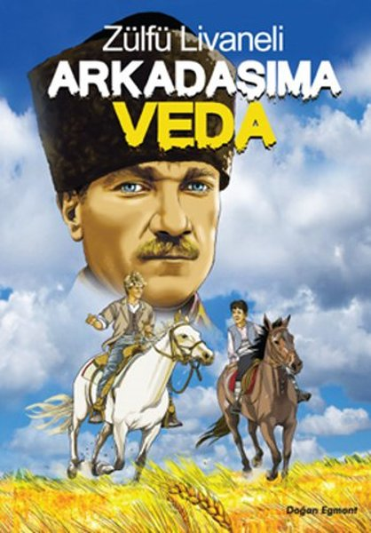
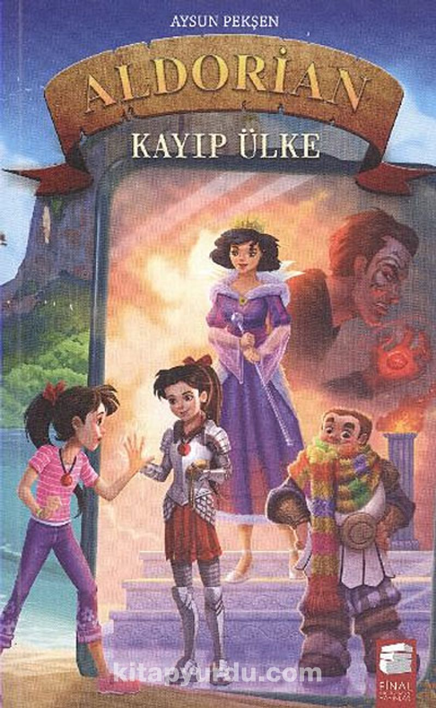
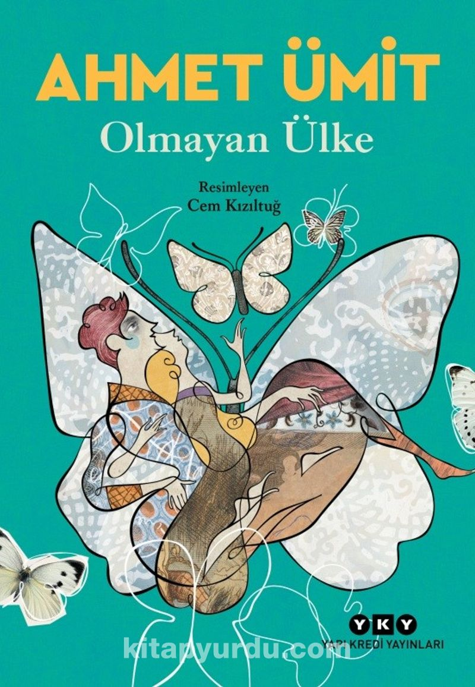
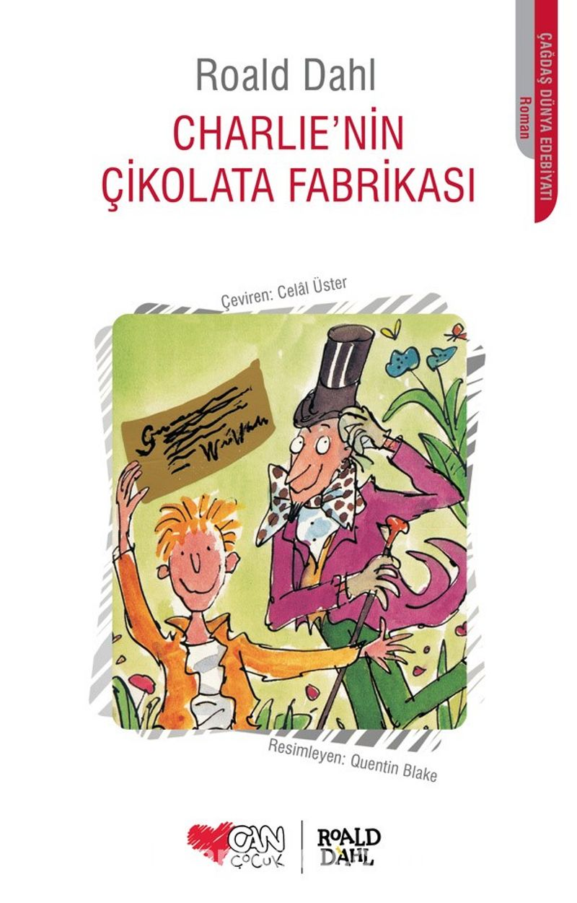

Arkadaşım'a Veda

Yardımcısı Salih Bozok’un dilinden dâhi lider Mustafa Kemal Atatürk’ün hayat hikâyesi. Yüreği daima vatan sevgisiyle dolu iki arkadaşın, hayallerini gerçekleştirme masalı.
Aldorian Kayıp Ülke

Elif, yaz tatilinde annesi, babası ve kız kardeşi Deniz ile birlikte Uzakdoğu seyahatine çıkacağı için çok heyecanlıdır. Fil sırtında gezeceği, yağmur ormanlarında yürüyüş yapacağı, rengârenk bir kültürü yakından tanıyacağı rüya gibi bir tatil onu beklemektedir.
Olmayan Ülke

Bir varmış bir yokmuş, yeryüzünde varlık çokmuş...
Akıl Ülkesinin Padişahıyla Hayal Ülkesinin Büyücü Kralının koca dünyayı paylaşamayarak tutuştukları savaş geride kalır. Fakat huzur ve mutluluk tüm canlılar için halen bir hayaldir.
Charlie'nin Çikolata Fabrikası

Charlie küçük bir ahşap kulübede anne babası ve dört ihtiyarlar birlikte yoksulluk içinde yaşamını sürdüren bir çocuktur.sadece doğum gününde çikolata yiyebiliyor, bu çikolata ile bir aydan fazla idare ediyordu. Charlie ye acı veren bir şey vardı.